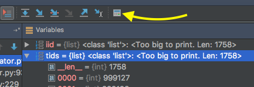
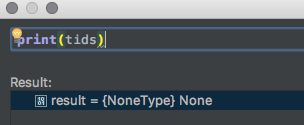

При отладке через PyCharm при просмотре длинной структуры данных возможно получение следующей ошибки:
Too large to show contents. Max items to show: 300
Этот лимит можно увеличить, отредактировав файл в директории с PyCharm:
helpers/pydev/_pydevd_bundle/pydevd_resolver.py
Изменить:
MAX_ITEMS_TO_HANDLE = 300
на
MAX_ITEMS_TO_HANDLE = 500
Также можно воспользоваться консолью внутри PyCharm:

и выполнить там print():
